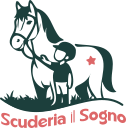
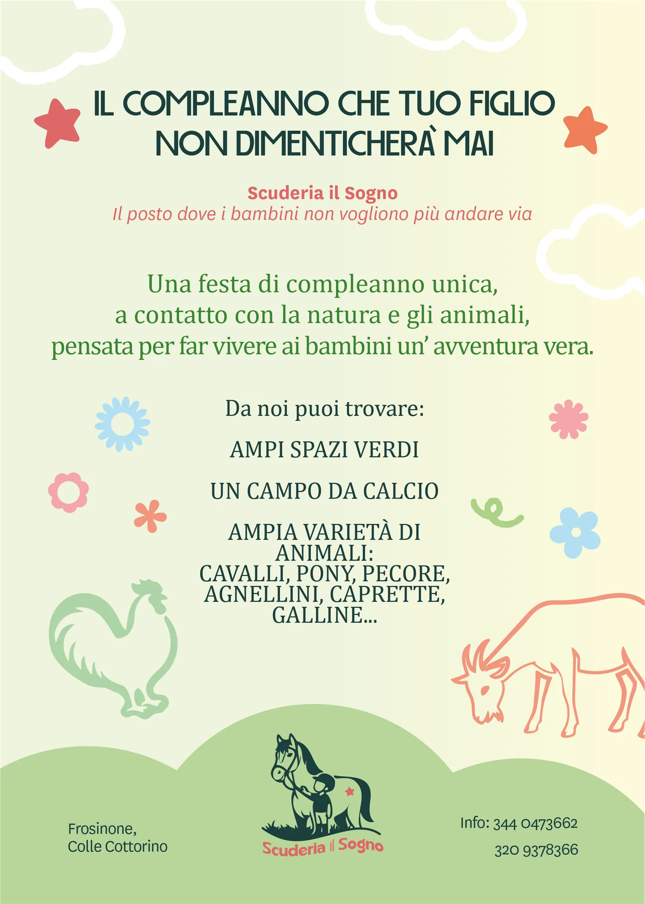

Scuderia il Sogno

Scuola Equitazione & Pony Club
Un legame
speciale.
Il logo per la Scuderia il Sogno è progettato con uno stile illustrato che mostra esattamente il target del progetto: i bambini ed i loro genitori.
Rappresenta il cavallo "Tuscan Gaze", talento della scuderia, con un piccolo fantino. Il nome del brand riprende la curvatura del pittogramma per sottolineare giocosità e apertura.
Natura Vibrante.
La color palette si ispira ai colori naturali, rendendoli più dinamici con tinte brillanti e vibranti per richiamare il mondo dell'equitazione e l'immaginario colorato dei bambini.
Carattere
e Tipografia.
La scelta tipografica unisce la forza pulita di Cartline (usata per il logotipo e i titoli principali), alla raffinatezza di Cambria e alla versatilità di National per i testi di corpo e le informazioni istituzionali.
Merchandising
& Stampati.
L'identità prende vita sugli oggetti di uso quotidiano e sui materiali promozionali: dalle t-shirt personalizzate (in versione chiara e scura) ai biglietti da visita rifiniti con pattern coordinati.
Comunicazione
& Eventi.
Materiali dedicati alla promozione di eventi speciali, come le feste di compleanno a contatto con la natura, progettati mantenendo intatti il calore, la palette e lo stile illustrato del brand.
